AutoFirma es una herramienta de escritorio con interfaz gráfica que permite la ejecución de operaciones de firma de ficheros locales en entornos de escritorio (Windows, Linux y macOS). También puede utilizarse a través de consola o ser invocada por otras aplicaciones mediante protocolo para la ejecución de operaciones de firma.
El presente documento guía al usuario final de AutoFirma a través del proceso de instalación, presenta las posibilidades de uso de AutoFirma a través de consola, el uso de tarjetas inteligentes y lista diversos problemas que pueden surgir en la instalación y ejecución de la aplicación.
AutoFirma hace uso de los certificados digitales X.509v3 y de las claves privadas asociadas a estos que estén instalados en el almacén de claves (KeyStore) del sistema operativo o del navegador Web (Internet Explorer, Mozilla Firefox, etc.) en caso de realizarse la operación desde un trámite web. También permite el uso de dispositivos externos (tarjetas inteligentes, dispositivos USB) configurados en estos almacenes de claves (como, por ejemplo, el DNI Electrónico o DNIe).
AutoFirma hace uso de las claves privadas asociadas a los certificados del usuario y no permite que estos salgan en ningún momento del almacén (tarjeta, dispositivo USB o repositorio local) ubicado en su PC.
AutoFirma no almacena ningún tipo de información personal del usuario, ni hace uso de cookies ni ningún otro mecanismo para la gestión de datos de sesión. AutoFirma sí almacena trazas de su última ejecución a efectos de ofrecer soporte al usuario si se encontrase algún error. Estas trazas de ejecución no contienen ningún tipo de información personal y la aplicación no facilita de ninguna forma el acceso a estos datos almacenados.
AutoFirma es una aplicación de Software Libre publicado que se puede usar, a su elección, bajo licencia GNU General Public License versión 2 (GPLv2) o superior o bajo licencia European Software License 1.1 (EUPL 1.1) o superior.
Puede consultar la información relativa al proyecto Cliente @firma, dentro del cual se encuentra AutoFirma, y descargar el código fuente y los binarios de la aplicación en la siguiente dirección Web:
https://administracionelectronica.gob.es/ctt/clienteafirma#.X1o8YcH7RPY
Adecuación al Esquema Nacional de Seguridad
Los productos de la Suite de @firma pueden contener entre los algoritmos disponibles, algunos no recomendados por la Guía 807 del Esquema Nacional de Seguridad (ENS; editada por el Centro Criptológico Nacional, CCN) vigente en el momento de publicación de este documento. Por lo que queda bajo la responsabilidad de las aplicaciones que hacen uso de estos productos el configurar adecuadamente las llamadas a los mismos para generar el resultado esperado, válido y adecuado para ese momento y el nivel de seguridad deseado, utilizando para ello algoritmos de la familia SHA-2 tal y como especifica dicha norma para la generación de firmas electrónicas.
Puede consultar la norma vigente desde el siguiente enlace:
Requisitos mínimos
El uso de AutoFirma como herramienta de firma integrada dentro del proceso de firma de trámites web tiene los siguientes requerimientos en cuanto a entorno operativo:
-
Sistema Operativo
-
Microsoft Windows.
-
Soportado directamente en 7, 8, 8.1 y 10.
-
En 32 o 64 bits.
-
-
Linux
- Distribuciones probadas: Ubuntu, Fedora y OpenSuse.
-
Apple macOS.
- Soportado directamente en Sierra, High Sierra, Mojave.
-
-
Navegadores Web (para la invocación por protocolo)
-
Microsoft Windows
-
Microsoft Internet Explorer 8 o superior.
-
Google Chrome 46 o superior.
-
Mozilla Firefox 41.0.2 o superior.
-
Microsoft Edge 60 o superior.
-
-
Linux
- Mozilla Firefox 41.0.1 o superior.
-
Apple macOS
-
Apple Safari 12.0 o superior.
-
Google Chrome 46 o superior.
-
Mozilla Firefox 65 o superior.
-
-
ADVERTENCIA: El funcionamiento de AutoFirma al invocarlo desde versiones de Internet Explorer anteriores a la 11 (o Internet Explorer 11 en modo de compatibilidad con una versión anterior) está supeditado a que el administrador de la aplicación web haya cumplido ciertos requisitos durante el despliegue. Para asegurar el correcto funcionamiento de las operaciones de firma online utilice otro de los navegadores soportados.
En entornos macOS y Windows no es necesario tener instalado un entorno de ejecución de Java. En Linux se necesita un entorno de ejecución de Java 11 de Oracle u OpenJDK 11 (marcado como dependencia en el instalador integrado de AutoFirma).
Es obligatorio que AutoFirma sea instalado antes de iniciar el trámite web en el que se usará para ejecutar las operaciones de firma.
Enlaces de descarga
Para instar al usuario que se instale AutoFirma, rediríjalo a la siguiente página web:
http://firmaelectronica.gob.es/Home/Descargas.html
Funcionamiento de AutoFirma
AutoFirma permite tanto su uso a través de su interfaz gráfica para la generación de firmas de documentos locales del usuario, como su uso como herramienta de firma dentro de un flujo de firma web.
Para que AutoFirma se inicie para permitir firmar en un trámite web, se necesario que dicho trámite se configure tal como se describe en el manual del integrador del Cliente @firma (MCF_manual-integrador_ES). Es requisito también que AutoFirma esté instalado en el equipo del usuario antes de iniciar el trámite de firma. Es responsabilidad del integrador alertar de este hecho cuando sea susceptible que los usuarios no tengan instalada la aplicación.
Ya se ejecute AutoFirma como aplicación de escritorio o sea lanzada por el navegador web, AutoFirma registra la operativa de su última ejecución en un fichero de trazas en el subdirectorio oculto “.afirma” del directorio del usuario. Por ejemplo, “C:\Users\miusuario\afirma”. El fichero generado tiene el nombre “AUTOFIRMA.afirma.log.xml”. Los ficheros de trazas del Cliente @firma en ningún caso almacenan información de carácter personal.
Uso del DNIe y tarjetas inteligentes
El Cliente @firma utiliza la biblioteca JMulticard para permitir firmar con DNIe y tarjetas inteligentes de la Fábrica Nacional de Moneda y Timbre (FNMT) sin necesidad de que los usuarios tengan instalados los controladores de la tarjeta. Por defecto, siempre que se seleccione un certificado de DNIe o uno insertado en una tarjeta de la FNMT, se utilizará JMulticard para ejecutar la operación de firma. El uso de JMulticard sobre el controlador oficial de estas tarjetas conlleva ciertas ventajas, ya que existen ciertas incompatibilidades de AutoFirma con estos que impiden que funcionen correctamente, sobre todo cuando se realizan firmas de múltiples documentos.
JMulticard está activado por defecto en AutoFIrma, pero puede desactivarlo para usar el controlador oficial de la tarjeta, que deberá estar instalado en el sistema, siga las instrucciones indicadas a continuación:
-
Abra la aplicación AutoFirma.
-
Seleccione el menú “Herramientas” y la opción “Preferencias”.
-
En la pestaña “General” se muestra la opción “Habilitar JMulticard para el uso de las tarjetas de la FNMT y DNIe”.
-
Después de modificar esta opción, deberá pulsar Aceptar en el panel de preferencias.
-
La configuración será efectiva la próxima vez que se abra AutoFirma.
<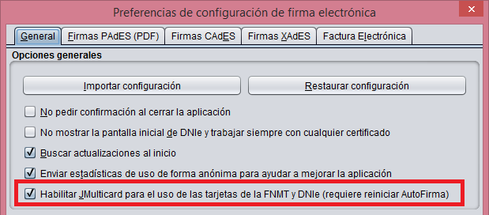
Cuando se desactiva el uso de JMulticard, no se usa esta biblioteca para firmar, ni en la firma local de documentos ni en las firmas dentro de un trámite web, en donde se utilizará el mismo controlador que utilice el navegador web utilizado. La única excepción a esto es cuando, al abrir AutoFirma, se selecciona expresamente la opción “Continuar con DNIe”.
Se recomienda mantener activado JMulticard por defecto, pero puede plantearse modificar esta configuración según el uso habitual de firma.
-
Manténgalo activado cuando habitualmente:
-
No utilice tarjetas para firmar.
-
Use tarjetas inteligentes o utilice el DNIe y tarjetas de la FNMT.
-
-
Manténgalo desactivado e instale los controladores oficiales de su tarjeta cuando habitualmente:
-
Utilice una nueva versión de DNIe o tarjeta inteligente y haya comprobado que AutoFirma no funciona correctamente con ellas.
-
Utilice tarjetas distintas a DNIe y tarjetas de la FNMT. JMulticard no impedirá su uso, pero sí puede alterar su comportamiento, por ejemplo, impidiendo que el controlador guarde en caché el PIN del usuario para reutilizarlo en firmas consecutivas.
-
Realice los trámites web desde Firefox y advierta que se producen problemas al firmar con su tarjeta (puede ocurrir con versiones antiguas de tarjetas de la FNMT).
-
La biblioteca JMulticard pedirá el PIN de las tarjetas siempre que lo requiera, lo que puede suponer insertarlo por cada documento de firma en los procesos de firma masiva. Para evitar esto, el propio diálogo de inserción de contraseña ofrece al usuario la posibilidad de seleccionar que se recuerde la contraseña durante la sesión de firma. Esta opción, sin embargo, podría no funcionar en trámites web (según la integración realizada del trámite y el navegador del usuario). En esos casos, se seguirá pidiendo la contraseña por cada documento. Este comportamiento podría corregirse con el uso del controlador de oficial de la tarjeta, aunque esto puede conllevar otros inconvenientes (necesidad de tener instalado el controlador, posibles incompatibilidades de arquitectura, posibles problemas de conexión con el dispositivo, etc.).
El administrador de entornos gestionados podría activar o desactivar el uso de JMulticard según el uso que estime que van a hacer sus usuarios de la aplicación. Por ejemplo, si disponen de tarjeta de funcionario/empleado no compatible con JMulticard, podrían optar para desactivarlo. Para hacer esto pueden modificar esta configuración de AutoFIrma tal como el resto de sus opciones.
Comunicación con servicios externos
Cuando AutoFirma se comunica con servicios externos, por ejemplo, para comprobar si existe una nueva versión o para la comunicación con el navegador web a través del servidor intermedio (consulte el apartado “Compatibilidad con dispositivos móviles y AutoFirma” del manual “MCF_manual-integrador_ES” para más información), se utiliza la configuración de proxy de red establecida en AutoFirma y el almacén de confianza de la JRE con la cual se ejecute la aplicación.
Para saber más sobre la configuración del proxy de red en AutoFirma consulte la ayuda integrada de AutoFirma (para la configuración a través de interfaz gráfica) o las opciones de configuración referentes al proxy en el apartado “6.4.1 Opciones Generales” (para la configuración de la aplicación por parte de un administrador).
En el caso de los certificados de confianza, AutoFirma utilizará el almacén de confianza de la JRE instalada junto a la propia aplicación (en las instalaciones de Windows o macOS) o el almacén de confianza de la JRE instalada en el sistema que se utilice para ejecutarla (en el caso de Linux).
Cuando AutoFirma intente acceder a un recurso de red o servicio externo sobre una comunicación SSL, rechazará por defecto la conexión en caso de que la conexión se cifrase utilizando un certificado SSL emitido por un prestador distinto a los incluidos en el almacén de confianza o cuando fuese expedido para un dominio distinto al que se intenta acceder. Esta medida de seguridad es necesaria para evitar ataques de seguridad que redireccionen las peticiones del cliente a servidores inseguros.
Sin embargo, es posible que un usuario necesite hacer uso de aplicaciones web desplegadas en dominios con certificados no reconocidos por Java, por ejemplo, porque sea un certificado emitido por un prestador sólo reconocido a nivel nacional o porque se trate de una aplicación o un entorno de pruebas. En estos casos, el usuario podría desactivar la verificación del certificado SSL desde el panel de preferencias de AutoFirma.
<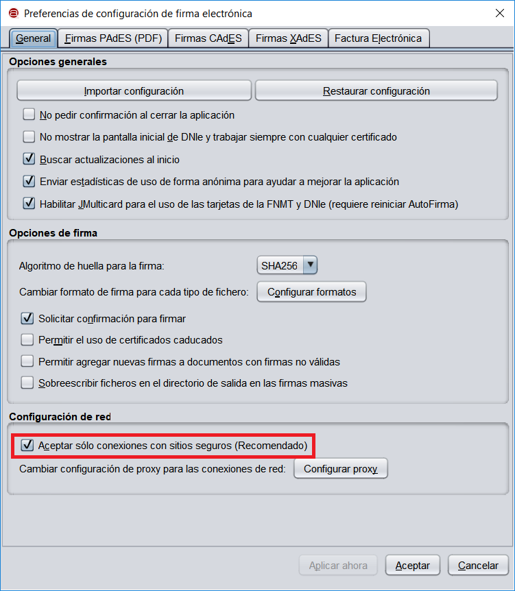
Para evitar problemas de conexión, asegúrese de cifrar su comunicación SSL con certificados reconocidos por defecto por Java. En caso contrario, el usuario o el administrador de los equipos deberán incluir los certificados de la entidad emisora del certificado SSL en el almacén de confianza de la JRE utilizada.
Para facilitar el despliegue a las entidades que utilizan certificados SSL emitidos por autoridades españolas, en el almacén de confianza de las JRE con las que se distribuyen las versiones de Windows y macOS se incluyen por defecto los certificados raíces de los siguientes prestadores:
-
Agencia de Tecnología y Certificación Electrónica (ACCV)
-
Fábrica Nacional de Moneda y Timbre (FNMT)
-
Firma Profesional (FNMT)
Así pues, AutoFirma permitirá por defecto la conexión con los servicios desplegados sobre conexiones SSL construidas con certificados de estos prestadores.
Esta lista de prestadores podrá variar en futuras versiones de AutoFirma según las solicitudes realizadas por los propios prestadores o entidades públicas que utilicen sus certificados. Requisito indispensable para incorporar un nuevo prestador a esta lista es que se trate de un prestador reconocido por el Ministerio de Industria, Comercio y Turismo.
Instalación
La instalación de AutoFirma en el sistema del usuario se asemeja a la instalación de cualquier otra aplicación. Sin embargo, el proceso de instalación incluye un paso de vital importancia para la compatibilidad de AutoFirma con las aplicaciones web que integren procesos de firma con el Cliente @firma.
La comunicación entre una página web y AutoFirma se puede realizar de varias maneras, siendo la principal a través de WebSocket por medio de un canal cifrado mediante certificado SSL generado en la máquina local durante el proceso de instalación. Para que sea posible la comunicación entre el navegador web y AutoFirma, será necesario que durante la instalación se genere el par de claves del certificado, que este se almacene en disco y que el certificado generado sea dado de alta en los almacenes de confianza de los navegadores del sistema. Debido a las medidas de seguridad establecidas por cada navegador web, es posible que esto implique la aparición de un diálogo gráfico de seguridad en el que se debe conceder permisos para realizar esta operación o insertar la contraseña del almacén o del usuario administrador del sistema.
El proceso de instalación guarda el almacén de claves generado en el directorio “.afirma” dentro del directorio del usuario que instaló la aplicación. El nombre del fichero de trazas se almacena en ese mismo directorio con el nombre “AUTOFIRMA_CONFIGURATOR.afirma.log.xml”.
En el caso de Linux y macOS, la instalación se realiza con el usuario administrador y el log se guarda en el directorio temporal del sistema o, si no se puede ahí, en “/var/tmp” para facilitar su acceso.
Microsoft Windows
Instalador EXE
La instalación de AutoFirma sobre Microsoft Windows debe ser realizada por un usuario con permisos de administrador. Esta aplicación de instalación se distribuye con el nombre “AutoFirma_W_vX.Y.Z_installer.exe”, donde X, Y y Z son los números de versión y W, la arquitectura de sistema para la que está preparada. Por ejemplo, “AutoFirma_32_v1.8.0_installer.exe” se correspondería con el instalador de AutoFirma versión 1.8.0 para sistema de 32bits.
AutoFirma es compatible con Windows 7 o superior en 32 y 64 bits (x86 o x64). Una vez instalada, puede usarse desde prácticamente cualquier navegador Web. Los navegadores oficialmente soportados son:
-
Microsoft Internet Explorer 8 y superiores
-
Google Chrome 46 o superior
-
Mozilla Firefox 41.0.2 o superior
-
Microsoft Edge v60 o superior
AutoFirma puede funcionar correctamente con otros navegadores, pero no se ofrece soporte sobre ellos.
El uso de versiones de Internet Explorer anteriores a la 11 (o la versión 11 en modo de compatibilidad con una versión anterior) requiere que el despliegue del Cliente @firma permita la comunicación a través de servidor intermedio. Consulte el manual del integrador del Cliente @firma para más detalles.
AutoFirma se distribuye en versiones de 32 y 64 bits para Windows. Esta diferenciación afecta únicamente a la cantidad de recursos del sistema que la aplicación es capaz de utilizar. Si se desea utilizar AutoFirma para la generación de firmas de ficheros grandes se deberá usar la versión de 64 bits de AutoFirma.
Al ejecutar el instalador, se mostrará una pantalla de bienvenida y se guiará al usuario a través de unos sencillos pasos:
<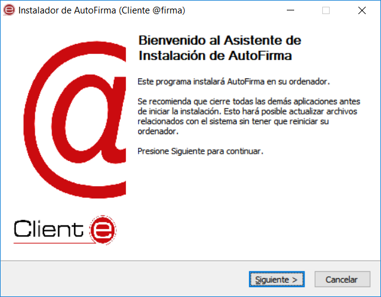
Al pulsar sobre el botón “Siguiente >” seremos redirigidos a la pantalla de licencia de la aplicación.
<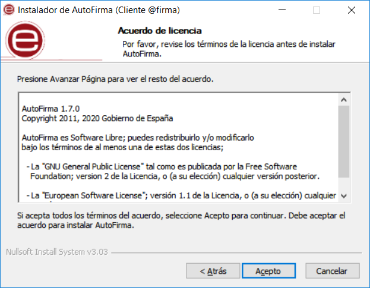
En esta pantalla, el usuario puede leer el texto de licencia de AutoFirma. Para continuar con el proceso de instalación es necesario pulsar el botón “Acepto”, tras lo cual se mostrará la pantalla de configuración de la ruta de instalación.
<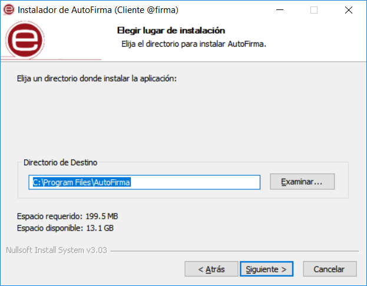
Puede dejar la ruta que se le muestra por defecto (recomendado) o seleccionar cualquier otra ubicación. En caso de modificar el directorio por defecto, asegúrese de instalar AutoFirma en un directorio propio y no en uno compartido con más aplicaciones o documentos.
Al pulsar el botón “Siguiente >” se mostrará la pantalla de configuración de las opciones avanzadas de integración.
<
Las opciones de integración de AutoFirma que pueden configurarse son:
-
Agregar al menú inicio: Al activarlo, se creará un submenú en el menú inicio de Windows con accesos directos a AutoFirma y a su desinstalador.
-
Crear acceso directo en el escritorio: Al activarlo, se creará un acceso directo en el escritorio de Windows.
-
Configurar Firefox para que confíe en los certificados raíz del sistema: Al activarlo, se modificará la configuración de Firefox para que confíe en los certificados SSL expedidos por los prestadores de confianza del sistema, sin necesidad de que estos prestadores estén dados de alta en el almacén confianza del navegador.
La extracción y copia de ficheros al sistema se iniciará al pulsar el botón “Instalar”.
<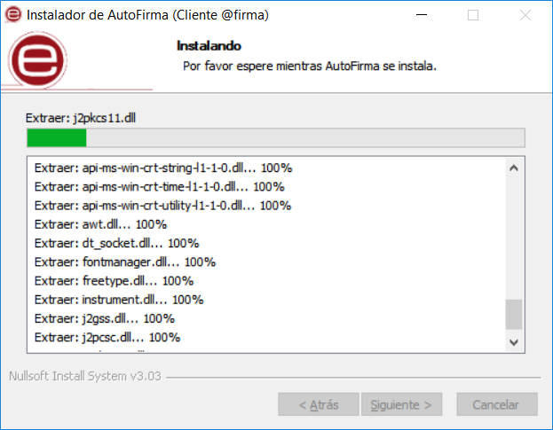
Una vez finalizada la copia de ficheros, se instalará un certificado de confianza SSL generado localmente en su almacén local de Windows.
ADVERTENCIA: El proceso de instalación afecta a los perfiles de Mozilla Firefox y a la configuración de Google Chrome. Estos navegadores se cerrarán automáticamente durante el proceso de instalación desatendido mediante el instalador MSI. Si se utiliza el instalador EXE, será necesario que el usuario cierre manualmente estos navegadores.
En el caso de la instalación con el instalar EXE, tenga en cuenta que los procesos de los navegadores pueden tardar un tiempo en finalizar después de haber cerrado la ventana de la aplicación. Si vuelve a aparecer el diálogo solicitándole que cierre la aplicación, compruebe que no se encuentre abierta y espere unos segundos antes de pulsar el botón para continuar con el proceso. Téngase en cuenta que el navegador Google Chrome puede quedar abierto incluso después de cerrar su ventana. En esos casos, aparecerá un icono en el área de notificaciones del escritorio del usuario y deberá cerrarse a través de la opción proporcionada en el menú contextual de este icono.
Al completarse el instalador, se mostrará el mensaje de “Completado”.
<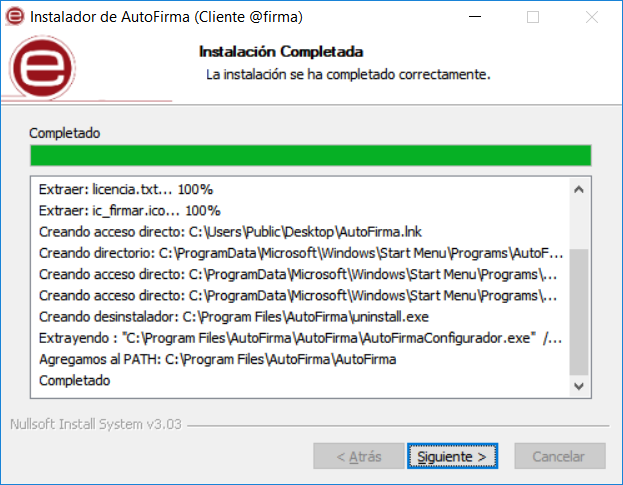
Al pulsar el botón “Siguiente”, se mostrará el resultado de la instalación.
<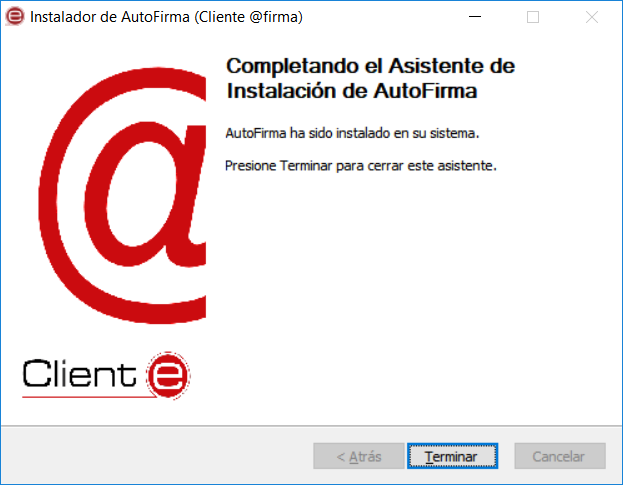
Una vez completada la instalación, las aplicaciones Web que integren el proceso de firma con el Cliente @firma podrán usar su versión instalada de AutoFirma para firmar.
-
Durante la ejecución de AutoFirma, es posible que este solicite permisos para acceder a la red. Consulte el apartado
KEYSTORE_PATHPermite indicar si se desea proporcionar un almacén de confianza distinto al generado en una instalación normal. La contraseña para este almacén debe ser obligatoriamente “654321” para su correcto funcionamiento. En el valor debe indicarse la ruta absoluta del almacén que se quiere proporcionar. El archivo debe de existir en la ruta que se proporciona, en caso contrario, la instalación no se realizará. Este parámetro debe de usarse junto con el parámetro CERTIFICATE_PATH, donde se indicará el certificado a instalar. En caso de que no se usen conjuntamente, no se realizará la instalación.
Las rutas absolutas que se indiquen en ambos parámetros deben indicarse con barra invertida (‘\).
El administrador también podría instalar AutoFirma normalmente en un equipo y utilizar el almacén y certificado generados para utilizarlos en otras instalaciones.
Ejemplo:Instalación con almacén y certificados proporcionados por el administrador:msiexec /i "AutoFirma_installer.msi" /quiet KEYSTORE_PATH="C:\pruebas\almacen_prueba.pfx" CERTIFICATE_PATH="C:\pruebas\certificado_prueba.cer"
CERTIFICATE_PATHPermite indicar si se desea proporcionar un certificado distinto generado en una instalación normal. En el valor debe indicarse la ruta absoluta del certificado que se quiere proporcionar. El archivo debe de existir en la ruta que se proporciona, en caso contrario, la instalación no se realizará. Este parámetro debe de usarse junto con el parámetro KEYSTORE_PATH, donde se indicará el almacén de confianza a instalar. En caso de que no se usen conjuntamente, no se realizará la instalación.
Las rutas absolutas que se indiquen en ambos parámetros deben indicarse con barra invertida (‘\).
El administrador también podría instalar AutoFirma normalmente en un equipo y utilizar el almacén y certificado generados para utilizarlos en otras instalaciones.
Ejemplo:Instalación con almacén y certificados proporcionados por el administrador:msiexec /i AutoFirma_installer.msi /quiet KEYSTORE_PATH="C:\pruebas\almacen_prueba.pfx" CERTIFICATE_PATH="C:\pruebas\certificado_prueba.cer"
Permisos adicionales para obtener más información.
Desinstalación
La desinstalación de Autofirma puede realizarse desde la ventana “Programas y características” del de “Panel de control” de Windows.
<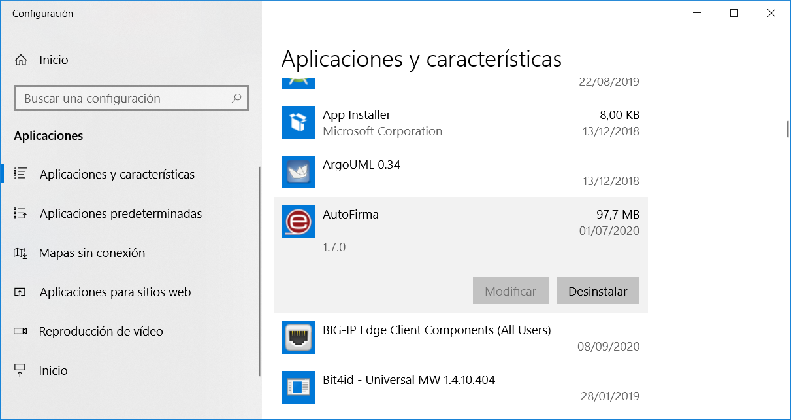
Una vez lanzado, el desinstalador presenta un sencillo asistente:
<
Al pulsar el botón “Siguiente >” se mostrará la opción de desinstalación.
<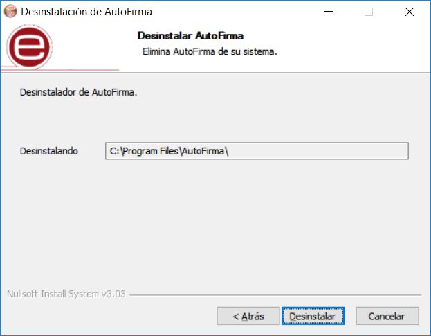
Al pulsar el botón de “Desinstalar” se iniciará el proceso de desinstalación.
<
ADVERTENCIA: El proceso de desinstalación afecta a los perfiles de Mozilla Firefox y a la configuración de Google Chrome. Estos navegadores se cerrarán automáticamente durante el proceso de desinstalación desatendido mediante el instalador MSI. Si se utiliza el instalador EXE, será necesario que el usuario cierre manualmente estos navegadores.
En el caso de haberse instalado la aplicación con el instalador EXE, tenga en cuenta que los procesos de estos navegadores pueden tardar un tiempo en finalizar después de haber cerrado la ventana de la aplicación. Si vuelve a aparecer el diálogo solicitándole que cierre la aplicación, compruebe que no se encuentre abierta y espere unos segundos antes de pulsar el botón para continuar con el proceso. Compruebe también que el navegador Google Chrome no muestra un icono en el área de notificaciones del escritorio del usuario y, en caso de que se muestre, cierre la aplicación a través de la opción proporcionada en el menú contextual de este icono.
Cuando el proceso termina, la aplicación ha sido correctamente desinstalada de Windows.
<
Despliegue masivo de la aplicación (Instalador MSI)
AutoFirma también se distribuye en forma de instalador MSI (32 y 64bits) orientado a su despliegue masivo por parte de un administrador que gestione las aplicaciones de un conjunto de usuarios.
En caso de existir versiones previas de AutoFirma instaladas en los equipos de los usuarios, se recomienda proceder a la desinstalación de las mismas antes de instalar la nueva versión. Si se instalase AutoFirma como parte de un despliegue masivo y el usuario hubiese instalado AutoFirma (mediante su instalador EXE) en el mismo equipo, es posible que ambas versiones convivan en el equipo, aunque sólo la última atendería las peticiones realizadas mediante protocolo. Sin embargo, al desinstalar una de estas versiones, es posible que la otra dejase de funcionar.
El instalador MSI realiza la instalación silenciosa en el equipo de los usuarios. El administrador debe asegurarse, en cualquier caso, de que el proceso de instalación no se realiza mientras los usuarios trabajan en sus equipos, ya que los navegadores Chrome y Firefox se cerrarán durante la instalación/desinstalación.
Para realizar la instalación silenciosa mediante consola, un usuario administrador puede emplear el comando:
msiexec /i "_RUTA_\AutoFirma_installer.msi" /quiet
Para su desinstalación, se emplearía este otro:
msiexec /x "_RUTA_\AutoFirma_installer.msi" /quiet
Consulte el manual de su software de instalación masiva de aplicaciones para saber cómo realizar el despliegue sobre múltiples máquinas.
Parámetros de configuración
El instalador MSI de AutoFirma soporta los siguientes parámetros para adecuar la instalación a los requisitos del organismo:
-
CREATE_ICON
-
Permite indicar si se desea que se cree el icono de AutoFirma en el escritorio del usuario. Si se indica el valor “false” el icono no se creará. En cualquier otro caso, sí se creará.
-
Ejemplo:
- Para una que no se cree el icono en el escritorio de los usuarios:
-
msiexec /i "AutoFirma_installer.msi" /quiet CREATE_ICON="false"
-
FIREFOX_SECURITY_ROOTS
-
Permite indicar si se desea configurar Firefox para que confíe en los certificados raíz del almacén entidades de confianza de Windows. Si se indica el valor “true”, se configurará esta opción de Firefox. En cualquier otro caso, no se modificará la configuración.
-
Ejemplo:
- Para una que Firefox confíe en los certificados raíz del sistema:
-
msiexec /i "AutoFirma_installer.msi" /quiet FIREFOX_SECURITY_ROOTS="true"
-
KEYSTORE_PATH
- Permite indicar si se desea proporcionar un almacén de confianza distinto al generado en una instalación normal. La contraseña para este almacén debe ser obligatoriamente “654321” para su correcto funcionamiento. En el valor debe indicarse la ruta absoluta del almacén que se quiere proporcionar. El archivo debe de existir en la ruta que se proporciona, en caso contrario, la instalación no se realizará.
Este parámetro debe de usarse junto con el parámetro CERTIFICATE_PATH, donde se indicará el certificado a instalar. En caso de que no se usen conjuntamente, no se realizará la instalación.
Las rutas absolutas que se indiquen en ambos parámetros deben indicarse con barra invertida (‘\).
El administrador también podría instalar AutoFirma normalmente en un equipo y utilizar el almacén y certificado generados para utilizarlos en otras instalaciones.
-
Ejemplo:
- Instalación con almacén y certificados proporcionados por el administrador:
msiexec /i "AutoFirma_installer.msi" /quiet KEYSTORE_PATH="C:\pruebas\almacen_prueba.pfx" CERTIFICATE_PATH="C:\pruebas\certificado_prueba.cer"
-
CERTIFICATE_PATH
- Permite indicar si se desea proporcionar un certificado distinto generado en una instalación normal. En el valor debe indicarse la ruta absoluta del certificado que se quiere proporcionar. El archivo debe de existir en la ruta que se proporciona, en caso contrario, la instalación no se realizará.
Este parámetro debe de usarse junto con el parámetro KEYSTORE_PATH, donde se indicará el almacén de confianza a instalar. En caso de que no se usen conjuntamente, no se realizará la instalación.
Las rutas absolutas que se indiquen en ambos parámetros deben indicarse con barra invertida (‘\).
El administrador también podría instalar AutoFirma normalmente en un equipo y utilizar el almacén y certificado generados para utilizarlos en otras instalaciones.
-
Ejemplo:
- Instalación con almacén y certificados proporcionados por el administrador:
msiexec /i AutoFirma_installer.msi /quiet KEYSTORE_PATH="C:\pruebas\almacen_prueba.pfx" CERTIFICATE_PATH="C:\pruebas\certificado_prueba.cer"
Permisos adicionales
Es probable que después de la instalación de AutoFirma, al ejecutarlo como aplicación de escritorio o como parte de un proceso de firma Web, la máquina virtual de Java instalada junto con AutoFirma solicite permisos para el acceso a Internet pasando por el Firewall de Windows. Es necesario conceder estos permisos para que AutoFirma pueda ejecutar tareas propias de su funcionamiento habitual, como son la búsqueda de actualizaciones o la comunicación con el navegador Web en los procesos de firma web.
En el caso de un despliegue masivo de AutoFirma, sería necesario que el administrador del sistema concediese estos permisos para el ejecutable “javaw.exe” del JRE residente en el directorio de instalación de AutoFirma.
Linux
La instalación de AutoFirma en Linux debe ser realizada por un usuario con permisos de administrador. Se distribuyen varias versiones del instalador de AutoFirma para Linux:
-
AutoFirma_X.Y.Z.deb: Instalador DEB para distribuciones derivadas de Debian/Ubuntu.
-
autofirma-X.Y.Z-1.noarch_FEDORA.rpm: Instalador RPM para distribuciones derivadas de RedHat/Fedora.
-
autofirma-X.Y.Z-1.noarch_SUSE.rpm: Instalador RPM para distribuciones derivadas de SUSE.
- NOTA: Se han encontrado problemas de compatibilidad con el Firefox por defecto instalado con el sistema operativo con el entorno KDE. En este caso, Firefox no atiende las llamadas realizadas por la página para que abra la aplicación. Se recomienda la instalación del Firefox oficial de la web de Mozilla.
En los nombres anteriores, las letras X, Y y Z (opcional) son los números de versión. Por ejemplo “AutoFirma_1.8.deb” correspondería a AutoFirma versión 1.8 para distribuciones Ubuntu/Debian.
Todos los instaladores incluyen la misma versión de AutoFirma, pero cada uno de ellos está preparado para la instalación en un conjunto distinto de distribuciones de Linux. La diferencia entre los dos instaladores RPM son las dependencias declaradas, dado que las NSS Tools se encuentran con distinto nombre en los repositorios por defecto de algunas distribuciones.
Para poder ejecutar AutoFirma son necesarias las siguientes dependencias, así que estas se comprueban durante el proceso de instalación:
-
JRE (Java Runtine Environment) de Oracle u OpenJDK (versión 11 o superior).
-
Biblioteca NSS Tools.
El funcionamiento de AutoFirma esta verificado en distribuciones Ubuntu, Fedora y OpenSuse. Una vez instalada, puede usarse como aplicación de escritorio e invocarse desde los navegadores web Mozilla Firefox y Google Chrome.
Hay dos opciones de instalación: por línea de comandos y desde la interfaz de escritorio.
La instalación por ambos medios dejará la aplicación instalada por defecto en el directorio:
/usr/lib/AutoFirma
Instalador DEB
Instalación por línea de comandos del instalador DEB
Para instalación por línea de comandos, en una consola ejecutaremos:
sudo dpkg –i RUTA_INSTALABLE_AUTOFIRMA
Donde RUTA_INSTALABLE_AUTOFIRMA es la ruta al instalador correspondiente a la distribución escogida.
Si no tenemos instaladas las dependencias anteriormente listadas, se nos mostrarán mensajes de advertencia al respecto. En caso de ser así, podremos instalar estas bibliotecas con el comando:
sudo apt-get –f install
Después de esto, se debe volver a ejecutar el comando de instalación de AutoFirma para asegurar su correcta instalación:
sudo dpkg –i RUTA_INSTALABLE_AUTOFIRMA
Instalación de Oracle Java con el fichero tar.gz de Oracle
Si se tuviese Oracle Java instalado en el sistema mediante el fichero tar.gz de la web de Oracle, la JRE no habrá quedado registrada en el gestor de paquetes. En ese caso, cuando se intente instalar AutoFirma, el gestor de paquetes considerará que no se cumplen los requisitos necesarios y se negará a instalarlo. Para forzar al uso de la JRE de Oracle se debe:
- Instalar la biblioteca “libnss3-tools”. Esta biblioteca es requisito indispensable de la aplicación:
sudo apt-get install libnss3-tools
- Configurar la variable JAVA_HOME con la JRE instalada y su directorio “bin” como parte del PATH del sistema. Esto se puede hacer, por ejemplo, editando el fichero “/etc/environment” y agregando a la variable PATH la ruta del directorio bin de Java y la nueva variable:
PATH="/usr/local/sbin:/usr/local/bin:/usr/sbin:/usr/bin:/sbin:/bin:/usr/games:/usr/local/games:/usr/java/jdk-11.0.8/bin"
JAVA_HOME="/usr/java/jdk-11.0.8"
Podemos hacer que el sistema recargue la configuración de este fichero (y así no sea necesario reiniciarlo) con el comando:
source /etc/environment
Instalación de muestra mediante el asistente de paquetes de Ubuntu/Guadalinex
Para la instalación mediante el asistente de paquetes, se debe hacer doble clic en el fichero de la distribución (.deb). Se abrirá una ventana similar a la siguiente.
<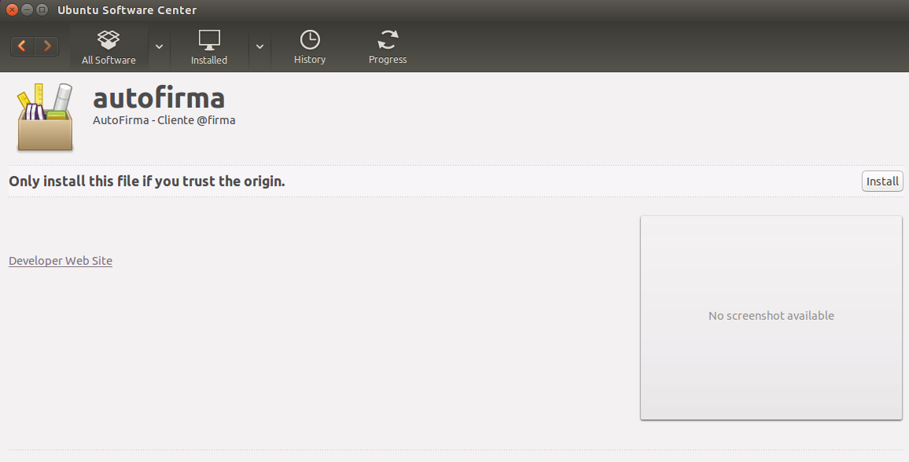
Se debe pulsar el botón instalar, que se encuentra arriba a la derecha. Si no se tienen permisos de administrador, el sistema solicitará la clave de “súper usuario” para poder realizar la instalación.
<
Si no ha ocurrido ningún problema, se mostrará un mensaje de confirmación.
<
Desinstalación del paquete DEB
Para realizar la desinstalación del sistema se puede utilizar el siguiente comando.
sudo apt-get remove –-purge autofirma
Cuando el proceso termina, la aplicación ha sido correctamente desinstalada del sistema.
Instalador RPM
Importación de la clave pública PGP del instalador
Antes de instalar la aplicación, se debería agregar la clave pública PGP del firmante del instalador al almacén de confianza del sistema. La clave pública PGP puede descargarse como un fichero “.asc” junto al archivo de instalación. Para importar esta clave PGP a nuestro almacén usaremos el comando:
sudo rpm --import PUBLIC_KEY.asc
En este comando, “PUBLIC_KEY.asc” será el fichero con la clave pública.
Una vez importada la clave PGP, el sistema podrá validar automáticamente la firma del instalador RPM.
Instalación por línea de comandos del instalador RPM
Para instalación por línea de comandos, en una consola ejecutaremos:
sudo rpm -i autofirma-X.Y.Z.noarch.rpm
En el comando anterior “autofirma-X.Y.Z.noarch.rpm” será el nombre del fichero instalador apropiado para nuestro sistema.
Instalación mediante el asistente de paquetes
Tenga en cuenta que el uso de un asistente de paquetes también puede requerir que se importe la clave PGP del firmante del instalador, para que así el sistema lo valide. Si no se importase la clave del firmante, algunos gestores de paquetes darán un error durante el proceso de instalación sin indicar el motivo del error.
Para la instalación mediante el asistente de paquetes, se debe hacer doble clic en el fichero de la distribución (.rpm), tras lo cual se pedirá la contraseña de administrador. Una vez introducida, se abrirá una ventana similar a la siguiente, según sea el gestor de paquetes del sistema. En el ejemplo mostrado, se puede ver el gestor de paquetes YaST.
<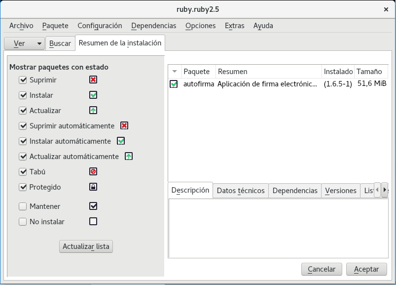
Al pulsar el botón Aceptar, se inicia el proceso de instalación:
<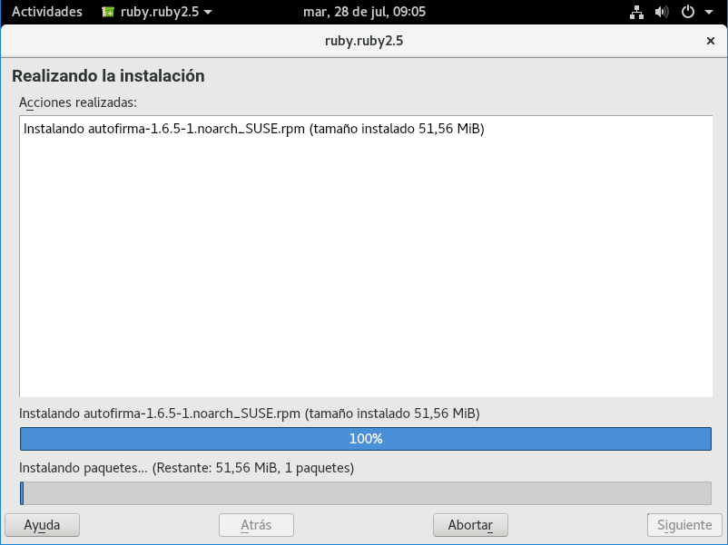
Tras finalizar el proceso de instalación, se mostrará una pantalla con el resultado del mismo:
<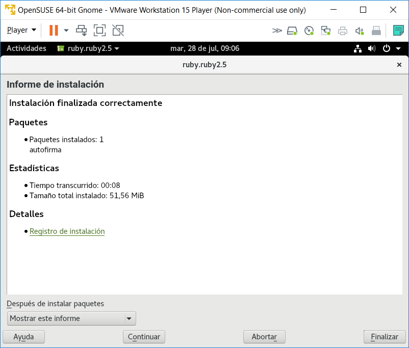
Desinstalación del paquete RPM
Para realizar la desinstalación del sistema se puede utilizar el siguiente comando.
sudo rpm –e autofirma
Cuando el proceso termine, la aplicación habrá sido correctamente desinstalada del sistema.
Actualización
Actualización del paquete con RPM
Para actualizar desde AutoFirma 1.8 a una posterior usaremos el comando:
sudo rpm -U autofirma-X.Y.Z.noarch.rpm
Sin embargo, cuando queremos actualizar desde una versión anterior a AutoFirma 1.8, deberemos indicar que durante la actualización no se ejecute el proceso de desinstalación de esa versión, ya que incluía un error que impedía el proceso. Para ello usaremos el comando:
sudo rpm -U --nopreun --nopostun autofirma-X.Y.Z.noarch.rpm
Cuando el proceso termine, la aplicación habrá sido correctamente actualizada.
Apple macOS
Instalador PKG
La instalación de AutoFirma en macOS debe realizarla un usuario con permisos de administrador. El archivo de instalación se distribuye con el nombre “AutoFirma_X.Y.Z.pkg”, donde X, Y y Z (opcional) son los números de la versión. Por ejemplo, “AutoFirma_1.6.pkg” correspondería a AutoFirma versión 1.6.
AutoFirma es compatible con las versiones de macOS Sierra y superiores. Los navegadores compatibles son Apple Safari, Google Chrome y Mozilla Firefox.
Para la instalación de la aplicación, se debe hacer doble clic sobre el fichero. El sistema abrirá el asistente que se encargará de realizar los pasos a seguir para la correcta instalación de la aplicación.
<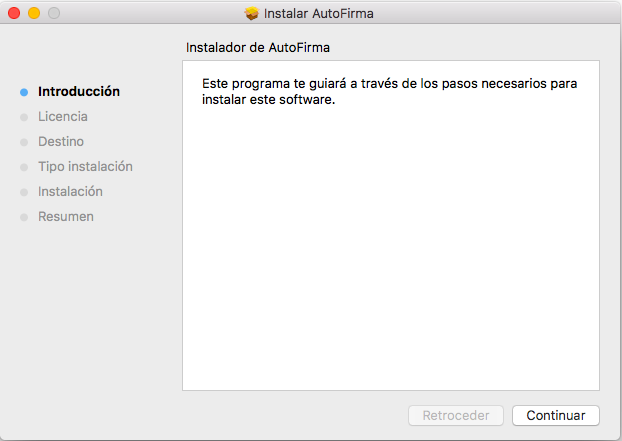
Para iniciar el proceso de instalación, hay que pulsar el botón “Continuar”, tras lo que se nos mostrará el acuerdo de licencia.
<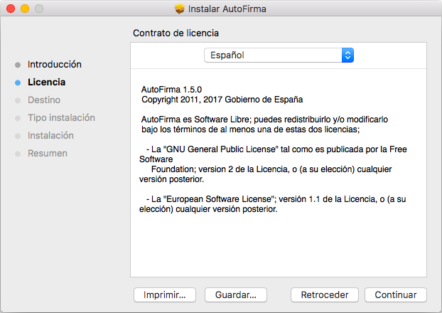
Una vez leída la licencia del producto, se puede pulsar “Continuar”. En ese momento, se indicará que se debe aceptar la licencia. Al pulsar el botón "Aceptar” se acepta la licencia y continúa con la instalación.
En la siguiente pantalla se mostrará seleccionar la unidad en la que se almacenará la aplicación:
<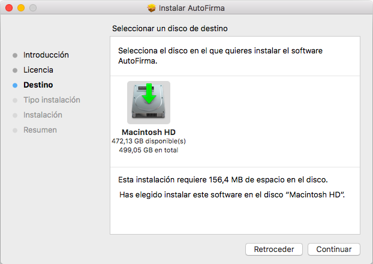
En esta pantalla se debe seleccionar la unidad principal y pulsar “Continuar” para ver el detalle resumen del proceso de instalación.
<
En esta pantalla se puede ver cuánto espacio en disco ocupará la aplicación. Al pulsar el botón “Instalar”, se comienza la instalación del producto.
Para completar la instalación será necesario indicar el nombre de usuario y contraseña de un usuario con permisos de administrador, ya que será necesario instalar certificados de confianza en el almacén del sistema y Firefox.
<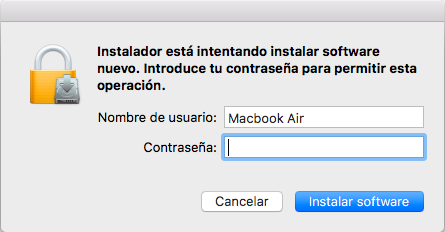
En caso de detectarse que el navegador Mozilla Firefox está en ejecución, se pedirá al usuario que lo cierre para continuar con el proceso de instalación.
Finalmente, se informará del resultado de la instalación.
<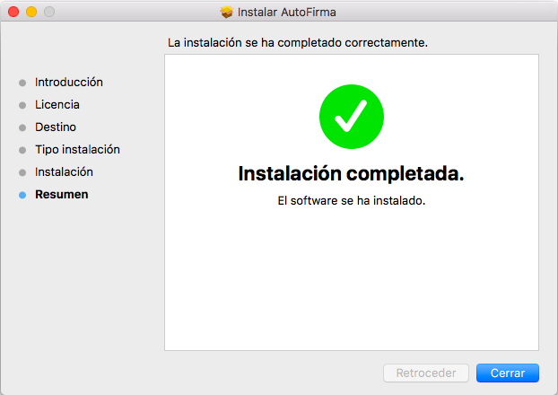
Desinstalación
Para desinstalar la aplicación basta con eliminar la carpeta que se generó en el directorio /Applications.
También es recomendable eliminar los certificados identificados como “AutoFirma ROOT” y “127.0.0.1” del llavero de macOS. Puede realizarse esto accediendo a la aplicación “Acceso a Llaveros”, seleccionándose el llavero “Sistema” y eliminando del listado los certificados mencionados.
Gestión de AutoFirma
Comprobaciones de nuevas versiones al inicio de la aplicación
AutoFirma siempre comprueba al arrancar si hay una versión más actual disponible para descarga desde la página Web del proyecto para evitar que se realicen trámites de firma con una versión obsoleta o antigua que pudiese tener instalada el ciudadano.
Es posible deshabilitar esta comprobación de diversas maneras:
-
Un usuario puede desactivar la actualización por medio de la opción “Buscar actualizaciones al inicio” en la pestaña General del menú de preferencias de la aplicación.
-
Un usuario o administrador puede desactivar la actualización por medio del fichero de configuración con la opción checkForUpdates. Consulte el apartado 6.2 Configuración a través de fichero para más información.
-
Un usuario o administrador puede desactivar la actualización estableciendo, a nivel de sistema operativo, la siguiente variable de entorno AUTOFIRMA_AVOID_UPDATE_CHECK con el valor true. Es posible que sea necesario reiniciar el equipo para que la JVM detecte correctamente el nuevo valor de esta variable.
En el caso de Windows, por ejemplo, esto sería:
<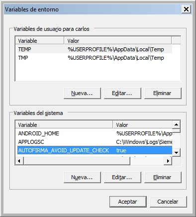
La inhabilitación de las comprobaciones de actualización sólo sería recomendable en entornos controlados (corporativos, internos a una administración, etc.) o cuando se sepa de problemas de incompatibilidad de las nuevas versiones con alguna aplicación. Por regla general, siempre es conveniente descargar e instalar las últimas versiones disponibles.
La URL a la que se conecta AutoFirma por defecto para comprobar la existencia de actualizaciones es:
http://estaticos.redsara.es/comunes/autofirma/autofirma.version
El código de versión de AutoFirma 1.8 es: 13
En caso de detectarse una nueva versión, AutoFirma permitirá al usuario abrir la página de descarga de la aplicación. La página que se abrirá por defecto es:
http://firmaelectronica.gob.es/Home/Descargas.html
Tanto la URL del código de la versión más reciente de AutoFirma como la URL de descarga se pueden configurar mediante el fichero de configuración. Esto es útil para evitar en entornos controlados que AutoFirma informe a los usuarios de las actualizaciones oficiales de la aplicación y no sea hasta que los administradores comprueben su correcto funcionamiento cuando se les notifique y se les redirija a una web de descargas del propio organismo. Esto se realiza mediante las opciones updater.url.version y updater.url.site. Consulte el apartado 6.2 Configuración a través de fichero para más información.
El administrador de red debe asegurar que los equipos de los usuarios tienen acceso a estas URL si se desea que sean los propios usuarios los encargados de identificar las nuevas versiones e instalarlas en sus equipos.
Configuración a través de fichero
AutoFirma permite que se configure a través de un fichero importado desde la pestaña General del panel de Preferencias de la aplicación. Esta opción está orientada principalmente a su uso por parte de administradores que hagan despliegues de la aplicación y que requieren que sus usuarios utilicen siempre unas propiedades concretas de firma.
El fichero de configuración debe tener como extensión “.afconfig”.
Es importante notar que las propiedades establecidas a través del menú de preferencias sólo afectan a la ejecución de la aplicación en modo escritorio. En las operaciones de firma solicitadas desde un navegador web siempre se utilizará la configuración de firma proporcionada por la aplicación web. Excepción a esto es la configuración de red (proxy y criterios de seguridad sobre los certificados SSL), que afectarán a la ejecución de la aplicación en ambas modalidades.
Este fichero no tiene porqué contener todas las propiedades que admite la aplicación, puede contener sólo aquellas que deseamos configurar. Si se importa un fichero que no define el valor de alguna propiedad, esta propiedad tendrá asignada el valor por defecto de la aplicación o, si se modificó previamente, el valor que ya tuviese asignado.
Las opciones que se podrán configurar serán todas aquellas que pueden establecerse a través del panel de preferencias de la aplicación, además de alguna opción adicional.
El listado completo de opciones configurables aparece en el apartado 6.4 Opciones configurables.
El fichero de configuración en cuestión, será un fichero PList, compuesto por un diccionario con el listado de claves y valores de las propiedades. Las claves siempre se designarán mediante una cadena de texto y el valor puede ser una cadena (String) o un valor de tipo verdadero/falso (true/false).
Este fichero PList puede firmarse con una firma en formato XAdES Enveloped. Si se delega en los usuarios la importación del fichero de configuración, puede pedir que comprueben el firmante del fichero con una herramienta externa como VALIDe para que confirmen que se firmó con el certificado adecuado.
Bloqueo de la configuración
Un uso interesante de la configuración de la aplicación entre los usuarios de un organismo o entidad es que permite bloquear las opciones que el usuario va a poder modificar. Hay opciones que son especialmente interesantes de fijar para que se apliquen a todas las firmas, como las políticas de firma, y otras que no se pueden bloquear debido a que afectan en gran medida al contexto de cada firma, como el lugar de realización de la firma o si se quiere hacer visible la firma de los PDF.
La configuración de la aplicación puede bloquearse por medio de la opción “preferencesUnprotected”, como se describe en el apartado 6.4.6 Opciones no configurables desde la ventana de preferencias.
Se indican aquí las propiedades del panel de preferencias que el usuario va a poder seguir configurando, aunque se bloquee la configuración general de la aplicación:
Pestaña General
-
No pedir confirmación al cerrar la aplicación
-
No mostrar la pantalla inicial de DNIe y trabajar siempre con cualquier certificado
-
Buscar actualizaciones al inicio
-
Enviar estadísticas de uso de forma anónima para ayudar a mejorar el uso de la aplicación
-
Validar confianza SSL
-
Configuración del proxy
<
Pestaña Firmas PAdES
-
Metadatos para firmas PAdES
-
Firma visible
<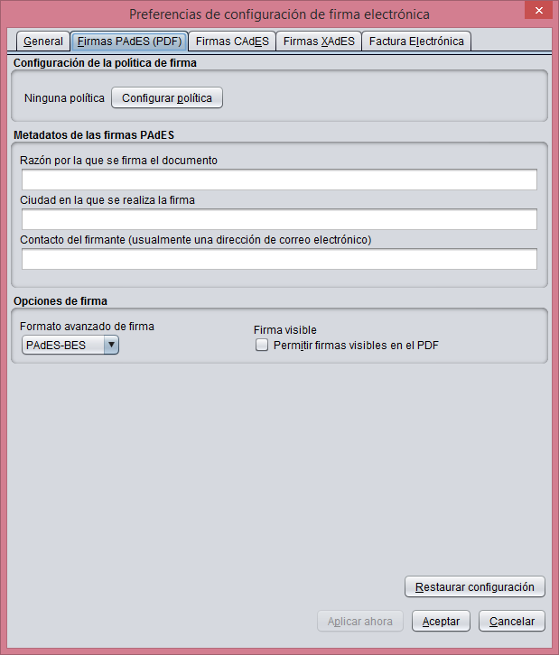
Pestaña Firmas XAdES
- Metadatos de las firmas XAdES
<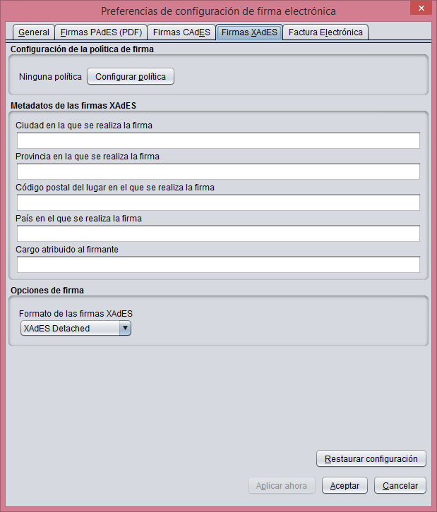
Pestaña Factura electrónica
-
Metadatos de las facturas electrónicas
-
Papel del firmante de la factura electrónica
<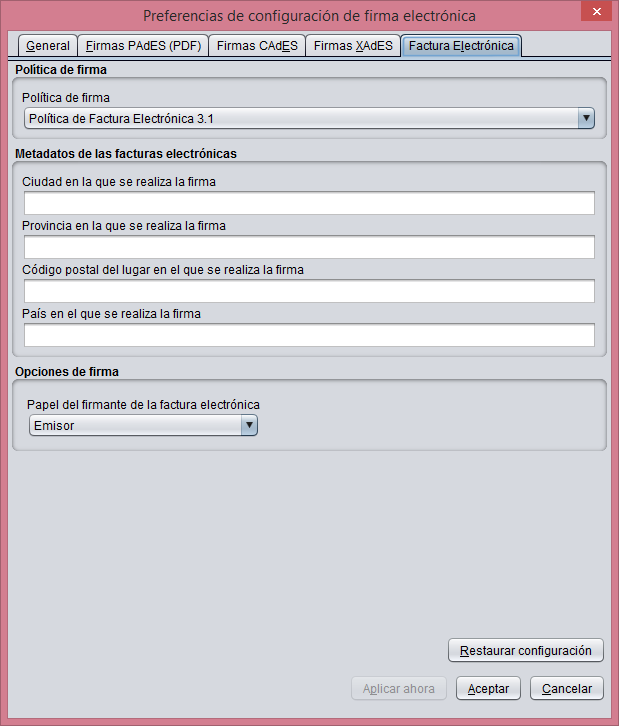
Firma del fichero de configuración
El fichero de configuración deberá estar firmado con una firma XAdES Enveloped y un certificado emitido por la autoridad intermedia definida por el Ministerio de Defensa en el momento de empaquetar la aplicación AutoFirma para su distribución.
El administrador encargado de configurar y distribuir este fichero puede firmarlo con la propia herramienta AutoFirma. Los pasos para preparar la aplicación para la firma de este fichero son:
-
Disponer del certificado de firma en el almacén prioritario configurado en la aplicación o en el almacén por defecto, si no se dispone del certificado en tarjeta criptográfica.
-
Desde la pestaña de configuración “General” de las preferencias de la aplicación, configurar que los “Ficheros XML genéricos” se firmen con firma “XAdES”.
-
En la pestaña “Firma XAdES” de las preferencias de la aplicación, configurar que el formato de firma XAdES sea “XAdES Enveloped”.
A continuación, podrá firmarse el fichero de configuración normalmente, seleccionando como certificado de firma el configurado en el primer paso.
Ejemplo de fichero de configuración
A continuación se muestra el contenido de un fichero simple de configuración:
<?xml version="1.0" encoding="UTF-8"?>
<plist version="1.0">
<dict>
<key>cadesImplicitMode</key>
<string>attached</string>
<key>createHashAsBase64</key>
<true/ >
</dict>
</plist>
En este fichero se establece que las firmas CAdES contengan por defecto los datos firmados (cadesImplicitMode) y que las huellas digitales realizadas se generen en base 64 (createHashAsBase64). El resto de la configuración del usuario permanecerá tal como estaba en el momento de importar el fichero de configuración.
En este ejemplo, el fichero de configuración no está firmado.
Configuración a través del registro en Microsoft Windows
Es común que en los entornos controlados de usuarios se disponga de herramientas para el despliegue masivo de aplicaciones y que estas también permitan la configuración del sistema alterando directamente el registro de Microsoft Windows. Cuando este es el caso, el administrador del sistema podrá configurar el comportamiento de AutoFirma modificando diversas claves de registro.
AutoFirma almacena en el registro de Windows todas las opciones de configuración establecidas mediante el panel de preferencias o un fichero de configuración importado. Concretamente, la configuración de AutoFirma se almacena en la clave de registro:
HKEY_CURRENT_USER\Software\JavaSoft\Prefs\es\gob\afirma\standalone\ui\preferences
Un administrador puede establecer a través del registro todas las opciones declaradas en el apartado 6.4 Opciones configurables para determinar así el comportamiento de AutoFirma.
Opciones configurables
Las opciones de configuración que se pueden establecer mediante fichero o a través del registro de Windows se presentan a continuación, separadas según la pestaña del panel de preferencias en la que se encuentran y reunidas en un apartado “Opciones globales” aquellas que no puede configurar directamente el usuario.
Opciones Generales
| Clave | Tipo | Descripción | |||
|---|---|---|---|---|---|
| omitAskOnClose | true/false | Evita la confirmación al cerrar la aplicación o no. Un valor de true en esta preferencia permitirá cerrar la aplicación sin ningún diálogo de advertencia. Un valor de false (por defecto) hará que se muestre un diálogo para que el usuario confirme que realmente desea cerrar la aplicación. | |||
| hideDnieStartScreen | true/false | No mostrar la pantalla inicial de uso de DNIe. Un valor de true en esta preferencia hace que nunca se muestre la pantalla inicial que sugiere al usuario el uso directo del DNIe como almacén de claves. Un valor de false (por defecto) hará que se muestre esta pantalla al inicio siempre que se detecte un lector de tarjetas en el sistema. | |||
| checkForUpdates | true/false | Buscar actualizaciones al iniciar la aplicación. Un valor de true (por defecto) en esta preferencia hace que, al iniciar la aplicación, se compruebe automáticamente si hay publicadas versiones más actuales. Un valor de false hará que no se haga esta comprobación. | |||
| useAnalytics | true/false | Envía estadísticas de uso. El valor true (por defecto) hace que, al arrancar, la aplicación envíe de forma anónima estadísticas de uso a Google Analytics. El valor false hará que no se envíe ningún dato. | |||
| enabledJmulticard | true/false | Habilita el uso de JMulticard para la firma con DNIe y tarjetas CERES. El valor true (por defecto) hace que tanto al seleccionar “Usar cualquier certificado” en la pantalla principal como cuando se invoca a AutoFirma desde un navegador, se utilice JMulticard si el usuario selecciona un certificado en tarjeta CERES o DNIe. El valor false hará que se utilicen los controladores oficiales de estas tarjetas para listar los certificados y firmar con ellos. | |||
| signatureHashAlgorithm | String | Algoritmo de huella para la firma. Esta preferencia debe tener uno de estos valores:
|
|||
| defaultSignatureFormatPdf | String | Formato en el que se firmarán los documentos PDF. Esta preferencia debe tener uno de estos valores:
|
|||
| defaultSignatureFormatOoxml | String | Formato en el que se firmarán los documentos OOXML. Esta preferencia debe tener uno de estos valores:
|
|||
| defaultSignatureFormatFacturae | String | Formato en el que se firmarán las facturas electrónicas. Esta preferencia debe tener uno de estos valores:
|
|||
| defaultSignatureFormatXml | String | Formato en el que se firmarán los documentos XML. Esta preferencia debe tener uno de estos valores:
|
|||
| defaultSignatureFormatOdf | String | Formato en el que se firmarán los documentos ODF (LibreOffice, OpenOffice.org…). Esta preferencia debe tener uno de estos valores:
|
|||
| defaultSignatureFormatBin | String | Formato en el que se firmarán los ficheros binarios. Esta preferencia debe tener uno de estos valores:
|
|||
| confirmToSign | true/false | Solicitar confirmación para firmar. El valor true (por defecto) hará que antes de cada proceso de firma se muestre un diálogo de confirmación, mientras que el valor false lo omitirá. | |||
| showExpiredCerts | true/false | Permitir el uso de certificados caducados para firmar. El valor true mostrará estos certificados en el diálogo de selección y permitirá la firma con ellos, mientras que el valor false (por defecto) los omitirá. | |||
| allowInvalidSignatures | true/false | Omitir la validación de las firmas de entrada. El valor true omitirá la validación de las firmas, de tal forma que se podrán cofirmar y contrafirmar firmas que se ha identificado que no son válidas (esta validación no incluye la del certificado de firma). El valor false (por defecto), hace que se obvie la validez de las firmas. | |||
| massiveOverride | true/false | Establece que, en las operaciones de firma masiva, se sobreescriban los ficheros que se encuentren en el directorio de salida con el mismo nombre que los nuevos ficheros que se van a guardar. El valor true sobreescribirá los ficheros. El valor false (por defecto), cambiará el nombre del nuevo fichero agregándole un número entre paréntesis cuando ya existiese un fichero con ese nombre en el directorio de salida. | |||
| secureConnections | true/false | Comprobar la confianza de los certificados SSL. Si se deshabilita, se permitirá conectar con servicios con un cifrado SSL realizado con certificados caducados, emitidos para otros dominios o expedidos por prestadores desconocidos. Puede ser necesario si usamos certificados SSL emitidos por algunos prestadores españoles, aunque, en ese caso, se recomienda introducir sus certificados de CA en el almacén de confianza de la JRE. |
|||
| proxyType | CUSTOM / | Tipo de configuración del proxy. Admite los valores:
|
|||
| proxyHost | String | URL del servicio del servidor proxy. | |||
| proxyPort | String | Número de puerto para la comunicación con el servidor proxy. | |||
| proxyUsername | String | Nombre de usuario con el que acceder al servidor proxy. | |||
| proxyPassword | String | Contraseña del usuario para la conexión con el servidor proxy. | |||
| proxyExcludedUrls | String | Listado de nombres de dominios y direcciones IP, separados por comas (‘,’) y en los que se puede usar asterisco (‘*’) como comodín, para los que AutoFirma no debería utilizar proxy. IMPORTANTE: Aquí deberían incluirse las direcciones de nuestra intranet. De no hacerlo, es posible que AutoFirma no funcione correctamente en los trámites web desplegados en dominios de la intranet. |
|||
Firmas PAdES (PDF)
| Clave | Tipo | Descripción |
|---|---|---|
| padesPolicyIdentifier | String | Identificador de la política de firma para PAdES. |
| padesPolicyIdentifierHash | String | Huella digital, en Base64, del identificador de la política de firma para PAdES. |
| padesPolicyIdentifierHashAlgorithm | String | Algoritmo de la huella digital del identificador de la política de firma para PAdES. Esta preferencia debe tener uno de estos valores:
|
| padesPolicyQualifier | String | Calificador de la política de firma para PAdES. |
| padesSignReason | String | Motivo de la firma en firmas PAdES. |
| padesSignProductionCity | String | Ciudad de firma para firmas PAdES. |
| padesSignerContact | String | Contacto del firmante en firmas PAdES. |
| padesBasicFormat | String | Formato de firma PAdES. Esta preferencia debe tener uno de estos valores:
|
| padesObfuscateCertInfo | true/false | Omitir información del documento de identidad del usuario de la firma visible PDF. Si está establecido a true, se detectarán los identificadores del usuario (número de DNI, NIE, pasaporte, etc.) extraídos del certificado y se omitirán en la firma visible PDF (sólo en la presentación visible, los datos del certificado serán los que correspondan). Si está a false (valor por defecto), no se codificará esta información. |
| padesVisibleSignature | true/false | Si está establecido a true, establece por defecto que se pida al usuario que determine mediante diálogos gráficos los parámetros de una firma visible PDF y se inserte como tal en el documento. Si está a false (valor por defecto), se realizarán firmas invisibles PDF. |
| padesVisibleStamp | true/false | Si está establecido a true, establece por defecto que se pida al usuario que determine mediante diálogos gráficos los parámetros de una marca visible PDF (que podrá agregarse a más de una página). Esta marca es una imagen que se agregará al documento antes de ejecutar la firma. Si está a false (valor por defecto), no se permitirá agregar esta imagen. |
Firmas CAdES
| Clave | Tipo | Descripción |
|---|---|---|
| cadesPolicyIdentifier | String | Identificador de la política de firma para CAdES. |
| cadesPolicyIdentifierHash | String | Huella digital, en Base64, del identificador de la política de firma para CAdES. |
| cadesPolicyIdentifierHashAlgorithm | String | Algoritmo de la huella digital del identificador de la política de firma para CAdES. Esta preferencia debe tener uno de estos valores:
|
| cadesPolicyQualifier | String | Calificador de la política de firma para CAdES. |
| cadesImplicitMode | String | Indica si la firma CAdES debe realizarse en modo implícito (attached) (por defecto) o no (detached). |
| cadesMultisignCosign | true/false | Indica que, por defecto, las multifirmas CAdES deben ser cofirmas. Esta opción es excluyente con el resto de opciones “cadesMultisign”. |
| cadesMultisignCountersignLeafs | true/false | Indica que, por defecto, las multifirmas CAdES deben ser contrafirmas de los nodos hoja. Esta opción es excluyente con el resto de opciones “cadesMultisign”. |
| cadesMultisignCountersignTree | true/false | Indica que, por defecto, las multifirmas CAdES deben ser contrafirmas de todo el árbol de firma. Esta opción es excluyente con el resto de opciones “cadesMultisign”. |
Firmas XAdES
| Clave | Tipo | Descripción |
|---|---|---|
| xadesPolicyIdentifier | String | Identificador de la política de firma para XAdES. |
| xadesPolicyIdentifierHash | String | Huella digital, en Base64, del identificador de la política de firma para XAdES. |
| xadesPolicyIdentifierHashAlgorithm | String | Algoritmo de la huella digital del identificador de la política de firma para XAdES. Esta preferencia debe tener uno de estos valores:
|
| xadesPolicyQualifier | String | Calificador de la política de firma para XAdES. |
| xadesSignatureProductionCity | String | Ciudad en la que se realiza la firma. |
| xadesSignatureProductionProvince | String | Provincia en la que se realiza la firma. |
| xadesSignatureProductionPostalCode | String | Código postal en la que se realiza la firma. |
| xadesSignatureProductionCountry | String | País en la que se realiza la firma. |
| xadesSignerClaimedRole | String | Cargo supuesto para el firmante. |
| xadesSignFormat | String | Formato de las firmas XAdES. Esta preferencia debe tener uno de estos valores:
|
| xadesMultisignCosign | true/false | Indica que, por defecto, las multifirmas XAdES deben ser cofirmas. Esta opción es excluyente con el resto de opciones “xadesMultisign”. |
| xadesMultisignCountersignLeafs | true/false | Indica que, por defecto, las multifirmas XAdES deben ser contrafirmas de los nodos hoja. Esta opción es excluyente con el resto de opciones “xadesMultisign”. |
| xadesMultisignCountersignTree | true/false | Indica que, por defecto, las multifirmas XAdES deben ser contrafirmas de todo el árbol de firma. Esta opción es excluyente con el resto de opciones “xadesMultisign”. |
Firmas Factura Electrónica
| Clave | Tipo | Descripción |
|---|---|---|
| facturaEPolicy | String | Versión de la política de firma de factura electrónica. Los valores posibles son:
Esta propiedad configura el resto de propiedades de la política de firma de factura cuando se establece desde la interfaz gráfica. Al establecerlo mediante fichero de configuración es necesario establecer también las siguientes 3 propiedades: facturaePolicyIdentifier, facturaePolicyIdentifierHash y facturaePolicyIdentifierHashAlgorithm |
| facturaePolicyIdentifier | String | Establece el identificador de la política de firma de factura electrónica. Para configurar la política de firma 3.0 se debe establecer el valor: http://www.facturae.es/politica de firma formato facturae/politica de firma formato facturae v3_0.pdf Para configurar la política de firma 3.0 se debe establecer el valor: http://www.facturae.es/politica_ de_firma_formato_facturae/ politica_de_firma_formato_ facturae_v3_1.pdf |
| facturaePolicyIdentifierHash | String | Establece la huella digital de la política de firma de factura electrónica. Para configurar la política de firma 3.0 se debe establecer el valor: xmfh8D/Ec/hHeE1IB4zPd61zHIY= Para configurar la política de firma 3.0 se debe establecer el valor: Ohixl6upD6av8N7pEvDABhEL6hM= |
| facturaePolicyIdentifierHashAlgorithm | String | Algoritmo de la huella digital del identificador de la política de firma de factura electrónica. Para configurar las políticas de firma 3.0 y 3.1 se debe establecer el valor: SHA1 |
| facturaeSignatureProductionCity | String | Ciudad en la que se realiza la firma. |
| facturaeSignatureProductionProvince | String | Provincia en la que se realiza la firma. |
| facturaeSignatureProductionPostalCode | String | Código postal en el que se realiza la firma. |
| facturaeSignatureProductionCountry | String | País en el que se realiza la firma. |
| facturaeSignerRole | String | Rol ejercido por el firmante en el proceso de firma. Debe tener uno de estos valores:
|
Opciones no configurables desde la ventana de preferencias
| Clave | Tipo | Descripción |
|---|---|---|
| preferencesBlocked | true/false | Proteger cambios en preferencias. Un valor de true en esta preferencia indica que deben limitarse las opciones de configuración mediante interfaz gráfico, apareciendo de forma deshabilitada (solo para consulta). Un valor de false habilitará que cualquier opción de configuración pueda ser alterada por parte del usuario mediante el interfaz gráfico. |
| createHashAsBase64 | true/false | Si está establecido a true (valor por defecto), se generan las huellas digitales de fichero en base64. Si es false, se generarán en binario. |
| createHashAlgorithm | String | Algoritmo de huella digital por defecto para la creación de huellas digitales. Esta preferencia debe tener uno de estos valores:
|
| createHashCopyToClipBoard | true/false | Copiar huella al portapapeles. El valor true (por defecto) indica que, por defecto, se debe copiar al portapapeles del sistema el valor de huella generado. El valor false indica que no se copie. |
| createHashFormat | String | Formato en el que almacenar la huella digital de un fichero. Esta preferencia debe tener uno de estos valores:
|
| createHashDirectoryAlgorithm | String | Algoritmo de huella digital por defecto para la creación de huellas digitales de directorios. Esta preferencia debe tener uno de estos valores:
|
| createHashDirectoryRecursive | true/false | Procesar subdirectorios en la operación de cálculo de huella digital de directorios. El valor true (por defecto) hace que se procesen, mientras que el valor false configura que no se procesen. |
| updater.url.version | String | URL remota del fichero que define el código de versión de la versión más reciente de AutoFirma. Consulte el apartado “Comprobaciones de nuevas versiones al inicio de la aplicación” para más detalles. |
| updater.url.site | String | URL de la página web desde la que descargar las nuevas versiones de AutoFirma. Consulte el apartado “Comprobaciones de nuevas versiones al inicio de la aplicación” para más detalles. |
Obtención de estadísticas con Google Analytics
AutoFirma utiliza Google Analytics para recoger información acerca de su uso. Esta información se limita al hecho de haber ejecutado AutoFirma y la IP del equipo. En ningún momento se recoge información personal del usuario u otra información del equipo más que la IP asignada.
A la información recabada sólo puede acceder el grupo de trabajo del Cliente @firma y este se compromete a que su uso se limita a conocer el número aproximado de usuarios de la herramienta.
La obtención de estos datos se realiza en segundo plano al ejecutarse AutoFirma y el resultado de su obtención y envío no afecta al uso de la propia herramienta. Así pues, AutoFirma podría no llegar a enviar los datos obtenidos, por ejemplo, por encontrarse detrás de un proxy de red, sin que esto afecte a su funcionalidad.
El usuario puede deshabilitar el envío de información a Google Analytics desde el panel de preferencias de la herramienta. También se puede configurar que deje de enviarse esta información por medio de la variable de entorno “es.gob.afirma.doNotSendAnalytics”. En caso de establecer esta variable a “true” se deshabilitará el envío de información. En caso contrario, se seguirá enviando.
En caso de configurarse la mencionada variable, no se enviará ninguna información a Google Analytics, independientemente de que el usuario haya configurado o no el envío de los datos a través del menú de preferencias de AutoFirma.
Habilitar en Firefox la confianza en los certificados raíz del sistema
Mozilla Firefox permite un modo de configuración en Windows y macOS con el cual, además de confiar en los certificados raíz de su almacén de confianza, puede confiar también en los certificados en el almacén de confianza del sistema. Habilitar esta configuración implica diversas ventajas para el usuario:
-
Puede instalar los certificados únicamente en el almacén del sistema. No es necesario que los instale en el almacén de confianza de Firefox
-
En entornos en los datos de la cuenta del usuario se carga desde un servidor, no es necesario transferir los datos del almacén de confianza de Firefox.
La configuración del almacén de confianza de Firefox se puede establecer durante la instalación de AutoFirma en Windows o mediante la opción de “Reparación de la instalación” de la aplicación en Windows o macOS. La opción de reparación de la instalación habilitará o deshabilitará esta opción según se haya marcado no la casilla de verificación antes de iniciar el proceso de restauración.
<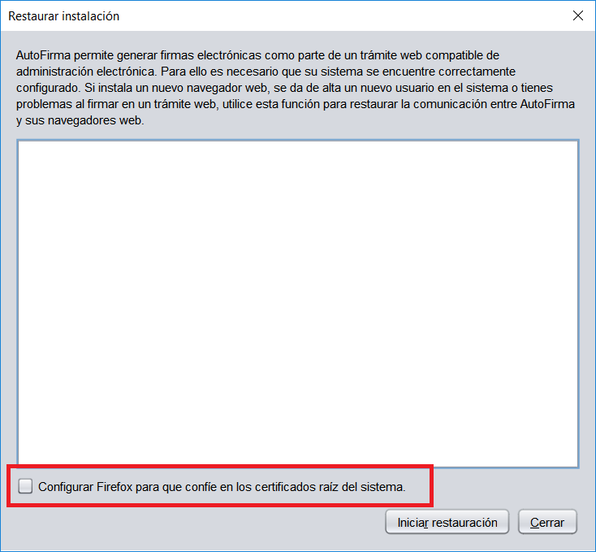
Problemas conocidos
Al instalar AutoFirma falla la instalación de los certificados de confianza SSL
AutoFirma requiere permisos de administrador para ser instalado y para insertar el certificado de confianza SSL para el funcionamiento de la firma en los trámites online. Si falla el proceso de instalación de los certificados, acceda al apartado de reparación de la instalación de AutoFirma (Menú “Herramientas” “Restaurar la instalación”) y ejecute el proceso de reinstalación.
En el caso de que la instalación de los certificados falle únicamente en Firefox, valore la el activar la confianza de Firefox en el almacén del sistema (sólo para sistemas Windows y macOS).
Si no puede instalar AutoFirma o el certificado de confianza y no es usted el administrador del sistema, solicite al administrador de su sistema que realice la instalación de la aplicación.
Al instalar AutoFirma en Windows se muestra el error: “Error abriendo archivo para escritura”
Es posible que durante la instalación se le muestre un error como el que sigue:
<
Si ya tenía instalado AutoFirma, compruebe que este no se está ejecutando, en cuyo caso el instalador no podrá sobrescribir los ficheros de instalación. Cierre AutoFirma y pulse el botón reintentar.
Si AutoFirma no se está ejecutando, es posible que el archivo en cuestión se encuentre bloqueado por una ejecución o intento de instalación previo. Reinicie su equipo y pruebe a instalar nuevamente la aplicación.
nuevamente la aplicación.
Al instalar AutoFirma en Linux a partir del paquete RPM con el gestor de paquetes del sistema se muestra el mensaje de error “Error interno”
Es posible que no se haya importado la clave PGP de firma en el almacén de confianza. Siga las instrucciones del apartado 5.2.2.1 Importación de la clave pública PGP del instalador para la importación de la clave PGP.
Al instalar AutoFirma en Linux a partir del paquete RPM desde consola aparece el error “NOKEY”
El mensaje “NOKEY” se muestra cuando se detecta que el instalador está firmado pero la clave no se ha importado en el sistema. Según el sistema, es posible que el instalador continúe con el proceso de instalación o no después de mostrar el mensaje.
Si el instalador no completa la instalación, prueba a importar la clave de firma en su sistema y repetir el proceso de instalación. Puede consultar como importar la clave PGP en el apartado 5.2.2.1 Importación de la clave pública PGP del instalador.
Al actualizar AutoFirma en Linux a partir del paquete RPM deja de funcionar
AutoFirma 1.7.1 y anteriores incluían un error en su desinstalador que impedía la correcta actualización a versiones posteriores. Para actualizar desde AutoFirma 1.7.1 o anterior a una nueva versión de AutoFirma es necesario indicar que no se debe ejecutar el desinstalador de la versión anterior durante el proceso. Por ejemplo, para actualizar mediante “rpm” deberíamos usa el comando:
sudo rpm -U --nopreun --nopostun autofirma-X.Y.Z.noarch.rpm
Si ya intentó actualizar AutoFirma y ahora no funciona, desinstálela e instale directamente la nueva versión.
Cuando se instala Mozilla Firefox o se crea un nuevo perfil de usuario después de la instalación de AutoFirma, este no funciona en Firefox
Durante el proceso de instalación de AutoFirma se genera un certificado para la comunicación entre la página web y la aplicación, y lo instala en los almacenes de confianza del sistema y de Firefox. Si se crea un perfil de usuario de Firefox o se instala el propio Firefox después de la instalación de AutoFirma, este no contará con el certificado entre los que considera de confianza.
Para resolver este problema utilice la función de restauración de la instalación de AutoFirma: Menú “Herramientas” “Restaurar instalación”.
AutoFirma se cierra inmediatamente tras ser invocado desde el navegador web
Cuando se abre AutoFirma por petición de un navegador web inmediatamente se abre una conexión entre ambas aplicaciones. Si AutoFirma detecta cualquier problema que evita que se pueda establecer esa comunicación, se cierra. Esto dará lugar a que, pasado un tiempo, la página web que intentó realizar la operación de firma informe de que no se pudo conectar con AutoFirma.
Si se encuentra en esta situación, utilice la función de “Restaurar instalación” de AutoFirma. Esta función permitirá reestablecer la configuración y los recursos necesarios para que se pueda establecer la comunicación entre el navegador y AutoFirma.
La función de “Restauración instalación” se encuentra disponible en el menú de herramientas de AutoFirma.
No se detectan tarjetas inteligentes en macOS
Muchas tarjetas inteligentes no disponen de los controladores necesarios para su uso a través del llavero de Apple (almacén utilizado por AutoFirma cuando se usa a través de Safari, Chrome o como aplicación de escritorio). En el caso concreto del DNIe y tarjetas CERES, AutoFirma es capaz de utilizarlo por medio del controlador Java que incorpora, pero con el resto de tarjetas no es posible.
Para utilizar tarjetas criptográficas en macOS, instale sus controladores PKCS#11 como dispositivos de seguridad en Mozilla Firefox y utilice AutoFirma a través de este navegador.
AutoFirma en macOS no muestra el título de los diálogos de cargar y guardado de ficheros
Las nuevas versiones de macOS omiten el título de los diálogos de carga y guardado de ficheros. En caso en que el integrador delegue en AutoFirma la selección y el guardado de las firmas generadas, debería tener la precaución de informar al usuario de esto para que en todo momento sepa qué operación está realizando (carga de un fichero de datos para firma, carga de un fichero de firma para cofirma/contrafirma, guardado de una firma generada…).
Error al importar las opciones de configuración desde un fichero
Si generase un fichero de configuración para la importación de las opciones de configuración en AutoFirma y al importarlo se mostrase el mensaje de error “El fichero de preferencias es inválido, no se realizará ningún cambio en la configuración”, es probable que el fichero utilizado no sea un XML válido o que tenga algún problema de codificación. Verifique que su fichero de configuración está bien formado y que la codificación utilizada es correcta.
AutoFirma no puede comunicarse con el navegador en macOS
En algunos casos la instalación de AutoFirma en macOS finaliza sin errores, pero no se instala el perfil de seguridad que permiten que AutoFirma se comunique de forma segura con el navegador web. En estos casos, al realizar una operación de firma, se arrancará correctamente AutoFirma, pero este no será capaz de transmitir el resultado de la firma al navegador web. Esto puede generar un error del navegador con el texto “No se ha podido conectar con AutoFirma.”.
Para solventar ese problema, utilice la función de “Restaurar instalación” de AutoFirma. Esta función permitirá reestablecer la configuración y los recursos necesarios para que se pueda establecer la comunicación entre el navegador y AutoFirma. La función de “Restauración instalación” se encuentra disponible en el menú de herramientas de AutoFirma.
En caso de que el proceso automático de restauración no funcione, será necesario configurar manualmente la confianza en los certificados de AutoFirma. Para ello:
-
Acceda a la aplicación “Acceso a llavero”.
-
Acceda al llavero “SISTEMA” y a la opción “Certificados”.
-
En el listado de certificados mostrados deben aparecer los certificados “127.0.0.1” y “AutoFirma ROOT”. Si el icono que aparece junto a estos muestra el signo ‘+’, se confía en los certificados y la comunicación con AutoFirma debería funcionar correctamente. Si no, continúe con el proceso.
-
Haga clic sobre el certificado “127.0.0.1” y pulse en la opción “Confiar”.
-
En el diálogo que debe haber aparecido, despliegue el listado “Al utilizar este certificado” y seleccione la opción “Confiar siempre”.
-
Repita los pasos 4 y 5 para el certificado “AutoFirma ROOT”.
-
Compruebe que en ambos certificados aparece ahora el símbolo ‘+’ junto a su icono.
-
Cierre la ventana de los llaveros.
-
Introduzca la contraseña de su usuario en el diálogo para confirmar el cambio en la configuración de seguridad.
<
Esta obra está bajo una licencia Creative Commons Reconocimiento-NoComercial-CompartirIgual 3.0 Unported.